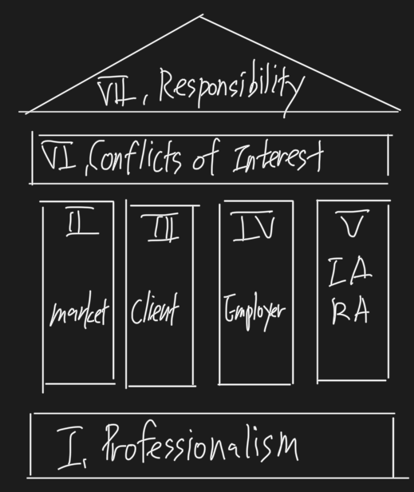

Ethical and Professional Standards
Ethics and Trust in the Investment Profession
- Ethics
- suitability standard
- fiduciary standard
- situational influences

I. Professionalism
- I(A) Knowledge of the Law
- I(B) Independence and Objectivity
- I(C) Misrepresentation
- I(D) Misconduct
II. Integrity of Capital Markets
- II(A) Material Nonpublic Information
- II(B) Market Manipulation
III. Duties to Clients
- III(A) Loyalty, Prudence, and Care
- III(B) Fair Dealing
- III(C) Suitability
- III(D) Performance Presentation
- III(E) Preservation of Confidentiality
IV. Duties to Employers
- IV(A) Loyalty
- IV(B) Additional Compensation Arrangements
- IV(C) Responsibilities of Supervisors
V. Investment Analysis, Recommendations and Actions
- V(A) Diligence and Reasonable Basis
- V(B) Communication With Clients and Prospective Clients
- V(C) Record Retention
VI. Conflicts of Interest
- VI(A) Disclosure of Conflicts
- VI(B) Priority of Transactions
- VI(C) Referral Fees
VII. Responsibilities as a CFA Institute Member or CFA Candidate
- VII(A) Conduct as Participants in CFA Institute Programs
- VII(B) Reference to CFA Institute, the CFA Designation, and the CFA program
Ethics and Trust in the Investment Profession
LOS 1.a - Explain ethics
Ethics
- Ethics can be described as a set of shared beliefs about what is good or acceptable behavior and what is bad or unacceptable behavior.
Stakeholders
- Ethical conduct has also been described as conduct that improves outcomes for stakeholders, who are people directly or indirectly affected by the conduct.
LOS 1.b - Describe the role of a code of ethics in defining a profession
Code of ethics
- A code of ethics is a written set of moral principles that ca guide behavior by describing what is considered acceptable behavior.
Profession
- A profession refers to a group of people with specialized skills and knowledge who serve others and agree to behave in accordance with a code of ethics.
- A profession is an occupational group that has requirements of specialized expert knowledge, and often a focus on ethical behavior and service to the larger community or society.
LOS 1.e - Explain professionalism in investment management
Suitability standard
- Suitability refers to the match between client return requirements and risk tolerances and the characteristics of the securities recommended.
- requirements와 investment objectivity가 조건만 맞으면 추천 가능(비싸도 추천 가능)
Fiduciary standard
- A fiduciary standard is stronger, requiring professionals to use their knowledge and expertise to act in the best interests of the client.
- 고객에게 최선의 이익을 주는 방향으로 추천해야 함
LOS 1.f - Identify challenges to ethical behavior
Situational influences
- It is claimed that external or situational influences are a more important determinant of the ethical quality of behavior than internal (personal) traits that influence behavior.
LOS 1.g - Distinguish between ethical and legal standards
Ethical and legal standards
- Not all unethical actions are illegal, and not all illegal actions are unethical.
- Ethical principles often set a higher standard of behavior than laws and regulations.
LOS 1.h - Describe and apply a framework for ethical decision making
Ethical decision making
- Identify - Relevant facts, stakeholders and duties owed, ethical principles, conflicts of interest
- Consider - Situational influences, additional guidance, alternative actions
- Decide and act
- Reflect - Was the outcome as anticipated? Why or why not?
Code of Ethics and Standards of Professional Conduct
The Standards of Professional Conduct
- I. Professionalism
- Integrity of Capital Markets
- Duties to Clients
- Duties ot Employers
- V. Investment Analysis, Recommendations, and Actions
- Conflicts of Interest
- Responsibilities as a CFA Institute Member or CFA Candidate
I. Professionalism
I(A). Knowledge of the Law
- Members and Candidates must understand and comply with all applicable laws, rules, and regulations (including the CFA Institute Code of Ethics and Standards of Professional Conduct) of any government, regulatory organization, licensing agency, or professional association governing their professional activities.
- Members and candidates must comply with the more strict law, rule, or regulation.
- Members and candidates must not knowingly participate or assist in and must dissociate from any violation of such laws, rules, or regulations.
- 잘 알고
- 내 나라 / 일터 / 직장의 applicable law를 잘 알고, update 잘 하고
- 나에게 적용되는 Law를 잘 알아야 한다.
- Law가 적용되는 position에 있으면 모르는 것이 면제되지 않는다.
- 잘 지키고
- 가능하면 더 엄격한 법을 지킨다. (more strict law)
- Code and Standard는 항상 minimum이다.
- 틀렸을 땐 따르지 말고
- Dissociation Process
- 확인
- 내부 - Compliance department, legal, audit
- 외부 - (내부역량이 떨어진다면) Independent compliance & legal opinion
- 보고 및 시정요구
- 내부 - (반드시) employer
- 외부 - (must 아님) - 법에서 요구할 시 공개
- Client information(illegal activity 포함)을 외부에 공개할 수 있는 경우
- III(E) Preservation of Confidentiality
- 법에서 요구할 때
- CFA 협회에서 요구할 때
- Client가 허락해 준 경우
- Client information(illegal activity 포함)을 외부에 공개할 수 있는 경우
- Dissociate / Resign
- Consider leaving the company
- 확인
- 시정되지 않으면 Insider가 되지 마라
- 내부보고가 항상 먼저 → 외부보고는 법규에서 요구할 때
- Dissociation Process
Code and Standards vs. Local Law
- Do not violate Code or Standards even if the activity is otherwise legal.
Participation or Association With Violation by Others
- Members should dissociate, or separate themselves, from any ongoing client or employee activity that is illegal or unethical, even if it involves leaving an employer (an extreme case).
- Inaction with continued association may be constructed as knowing participation.
- 내부보고를 반드시 먼저 해야 함. 하지 않으면 미필적 고의
Recommended Procedures for Compliance - Members
- Members should seek advice of counsel or their compliance department when in doubt.
- person in charge에게 advice를 구하라
- There is no requirement under the Standards to report violations to governmental authorities, but this may be advisable in some circumstances and required by law in others.
I(B). Independence and Objectivity
- Members and Candidates must use reasonable care and judgment to achieve and maintain independence and objectivity in their professional activities.
- Members and candidates must use reasonable care and judgment to achieve and maintain independence and objectivity in their professional activities.
- Members and candidates must not offer, solicit, or accept any gift, benefit, compensation, or consideration that reasonably could be expected to compromise their own or another’s independence and activity.
Gifts
- Clients로 부터의 gifts(disclosure 전제)는 괜찮지만, 다른 parties(IB, public companies, buy-side clients, and etc)로 부터의 gifts(=pressure)는 Independence and Objectivity를 지키기 위해 차단하라.
- exception - Token Item(가능) / Cash gifts(불가능)
- Token Item - 시장가치가 없는 Item
- Gifts from clients
- 과거 performance에 대한 보상은 disclosure하면 OK
- 미래 performance에 대한 보상은 employers’ permission을 얻으면 OK
- III(B) Fair Dealing 이슈가 있을 수 있음
- IV(B) Additional Compensation Arrangements
- 모든 이해관계에서 허락을 받아야 함
Issuer-paid Research(IPR)
- 원칙
- IPR임을 disclosure
- Flat fee
- Never - 리포트 결과 또는 대상회사 주가에 연동되어 받는 incentives
- Analysts’ Compensation
- Best - Flat fee
- 2nd - Flat fee + incentives(회사 전체 수익에 연동해서)
- never - Flat fee + incentives(IB, reports’ conclusion, 대상회사 주가)
- IPR은 Independence 문제가 있지만 굉장히 common한 상황
- Buy-side는 back data없이 투자가 불가능하기 때문에 IPR을 요구하는 경우가 있음
Travel
- Best - Analysts pay for their own commercial travel
- If commercial transportation is unavailable, members and candidates may accept modestly arranged travel to participants in appropriate information-gathering events, such a s a property tour.
- OK - normal, modest accommodations or tickets and etc
- not OK - lavish, extravagant, luxurious hotels or meals and etc
- Best practice is for analysts to pay for their own commercial travel when attending information events or tours sponsored by the firm being analyzed.
Relationships with other parties
- IB debt - disclosed and managed
- firewall, separated reporting system, different in-change, compliance debt, restricted list → fact-only report, compensation system 연동 x
- IBD cover 하는 중에는 research report 발행 x
- fact-only report - report without opinion
- Credit rating agencies
- consider whether independent analyst is warranted (review)
- Etc
- Public companies, Buy-side Clients, Fund Manager and Custodial Relationships, Performance Measurement and Attribution, Manager Selection
Guidance
- Do not let the investment process be influenced by any external sources.
- Modest gifts are permitted.
- Distinguish between gifts from clients and gifts from entities seeking influence to the detriment of the client.
- Gifts must be disclosed to the member’s employer in any case, either prior to acceptance if possible, or subsequently.
Investment Banking Relationships
- Do not be pressured by sell-side firms to issue favorable research on current or prospective investment-banking clients.
- It is appropriate to have analysts work with investment bankers in “road shows” only when the conflicts are adequately and effectively managed and disclosed.
- Be sure there are effective “firewalls” between research/investment management and investment banking activities.
Public Companies
- Analysts should now be pressured to issue favorable research by the companies they follow.
- Do now confine research to discussions with company management, but rather use a variety of sources, including suppliers, customers, and competitors.
Buy-Side Clients
- a rating downgrade may have an effect on the portfolio performance.
Fund Manager and Custodial Relationships
- Members responsible for selecting outside managers should not accept gifts, entertainment, or travel that might be perceived as impairing their objectivity.
Performance Measurement and Attribution
- Performance analysts may experience pressure from investment managers who have produced poor results or acted outside their mandate.
Credit Rating Agencies
- IPR이랑 같음
- Members employed by credit rating firms should make sure that procedures prevent undue influence by the firm issuing the securities.
- Members who use credit ratings should be aware of this potential conflict of interest and consider whether independent analysis is warranted.
Recommended Procedures for Compliance
- Protect the integrity of opinions
- Restrict special cost arrangements
- Limit gifts - token items only
- Firms should appoint a compliance officer and provide clear procedures for employee reporting of unethical behavior and violations of applicable regulations.
I(C). Misrepresentation
- Members and Candidates must not knowingly make any misrepresentations relating to investment analysis, recommendations, actions, or other professional activities.
- Communication with Clients
- 결과물에 대한 광고
- Qualifications
- Performance Records
- Expected Return
- Available Services
- Guarantee Statements
- 고객이 misleading 할 만한 일들은 하지 말라
- 굉장히 포괄적인 Communication을 의미
- 자본시장법은 손실보전행위의 금지를 명시하고 있음
- 증권업의 본질은 risk, 수익 보장은 증권업의 본질을 위반하는 행위
- 자기책임의 원칙, 가격형성의 공정성 위반
- Plagiarism
- Work completed for Employer
- 회사 - reissue without attribution
- 나(junior) - reissue without attribution, but reissue solely under junior’s name (X)
Guidance
- This includes oral, electronic, and social media communications.
- Misrepresentations include guaranteeing investment performance and plagiarism.
- Plagiarism encompasses using someone else’s work (reports, forecasts, models, ideas, charts, graphs, and spreadsheet models) without giving them credit.
- Knowingly omitting information that could affect an investment decision or performance evaluation is considered misrepresentation.
Recommended Procedures for Compliance
- Information form recognized financial and statistical reporting services need not be cited.
- Members should encourage their firms to establish procedures for verifying marketing claims of third parties whose information the firm provides to clients.
Plagiarism
- I(C) also prohibits plagiarism in the presentation of material for distribution to employers, associates, clients, prospects, or the general public.
- Plagiarism is defined as copying or using in substantially the same form materials prepared by others without acknowledging the source of the material or identifying the author and publisher of such material.
- Members and candidates must not copy (or represent as their own) original ideas or material without permission and must acknowledge and identify the source of ideas or material that is not their own.
- Clear violations
- using excerpts from articles or reports prepared by others either verbatim or with only slight changes in wording without acknowledgment.
- citing specific quotations as attributable to “leading analyst” and “investment experts” without naming the specific references.
- presenting statistical estimates of forecasts prepared by others and identifying the sources but without including the qualifying statements or caveats that may have been used
- using charts and graphs without stating their sources
- copying proprietary computerized spreadsheets or algorithms without seeking the cooperation or authorization of their creators
- Definition of General Concept
- P/E, P/B, EV/EVITDA, VaR 등 사용 시 reference를 밝혀야 함
- if in my own word, don’t have to refer
- Factual data from recognized/financial/statistical/reporting services
- don’t need reference by CFA Institute
- past fact이기 때문에 괜찮다는 입장. 협회의 입장임.
- Second-hand research
- Author 인용은 must
- Publisher 인용은 optional
- Permission from author
- reference 필요
I(D). Misconduct
- Members and candidates must not engage in any professional conduct involving dishonesty, fraud, or deceit or commit any act that reflects adversely on their professional reputation, integrity, or competence.
Illegal and Ethical ↔︎ Legal and Unethical
- legal이나 Unethical해서 발생하는 grey area가 있음
- illegal and ethical - no violation I(D)
- 불법이라도 윤리적이면 CFA Institute에서는 제제하지 않겠다는 의미
- I(A) violation
- legal and unethical - violation
- 업무 중 과도한 음주, receipt fudging(법인카드 grey area)
I(D) applies only to Members and Candidates professional activites?
- no
- applies to professional activities and general activities
- I(D)는 결국 candidate의 reputation, integrity, competence를 해하는 unethical 문제인가가 기준
Professional Conduct Program(PCP) abuses
- unethical 행위의 신고창구라고 생각하면 됨
- Individuals may attempt to abuse the CFA Institute Professional Conduct Program by actively seeking CFA Institute enforcement of the Code and Standards, and Standard I(D) in particular, as a method of setting personal, political, or other disputes unrelated to professional ethics. - 무고죄 고발에 대한 내용
Guidance
- Do not abuse CFA Institute’s Professional Conduct Program by seeking enforcement of this Standard to settle personal, political, or other disputes that are not related to professional ethics.
II. Integrity of Capital Markets
II(A). Material Nonpublic Information
- Members and candidates who possess material nonpublic information that could affect the value of an investment must not act or cause others to act on the information.
- Material and nonpublic information을 알게 되면, 즉시 firewall을 만들어서 정보유출을 막아야 한다. (정보의 주체가 내보낼 때까지) 만약 정보를 내보내야 할 때에는 public dissemination하게 한다.
- 1st 전달자, 1st 수령자,
Material
- Definition - 주가, 혹은 투자자의 의사 결정에 영향을 줄 수 있는 정보
- Conditions
- Reliability - from insider, CEO, professionals(analyst) (O) ↔︎ doctors, teachers, rumors, speculation (X)
- 정보의 source가 중요
- what kind - earnings, events(M&A, IPO, buy back, strike)
- 수익에 관련된 이벤트
- Reliability - from insider, CEO, professionals(analyst) (O) ↔︎ doctors, teachers, rumors, speculation (X)
Nonpublic
- Definition of public - 원한다면 누구든지 볼 수 있는 정보 (접근가능성)
- grey area - membership이 필요한 site는 nonpublic
Firewall
- 만약 없다면 IV(C) Responsibilities of Supervisors 위반
- 내부인 → 감사인 → 공시 (정보출처가 내보내기 전까지는 해당 정보를 활용 해서는 안 됨)
Public Dissemination
- available to market place in general (O) ↔︎ selective disclosure (X)
- press release (O) ↔︎ analysts’ conference (X)
Mosaic Theory

- ok
- 대신, V(A) Diligence and Reasonable Basis가 있어야 한다.
- public info + non-material info → investment conclusion → trading ok
- documentation(data, source, etc) → V(C) Record Retention - 7 years
- an analysis of public information together with items of nonmaterial nonpublic information
Guidance
- Information is “material” if its disclosure would impact the price of a security or if reasonable investors would want the information before making an investment decision.
- Ambiguous information, as far as its likely effect on price, may not be considered material.
- Information is “nonpublic” until it has been made available to the marketplace.
- An analyst conference call is not public disclosure.
- Selectively disclosing information by corporations creates the potential for insider-trading violations.
- Some members and candidates may be involved in transactions during which they receive material nonpublic information provided by firms (e.g., investment banking transactions).
- Members and candidates may use the provided nonpublic information for its intended purpose, but must not use the information for any other purpose unless it becomes public information.
Industry Experts
- Members and candidates may seek insight from individuals who have specialized expertises in an industry.
- However, they may not act or cause others to act on any material nonpublic information obtained from these experts until that information has been publicly disseminated.
Recommended Procedures for Compliance
- Make reasonable efforts to achieve public dissemination of the information.
- Encourage firms to adopt procedures to prevent misuse of material nonpublic information.
- Use a “firewall” within the firm.
- Substantial control of relevant interdepartmental communications, through a clearance area such a s the compliance or legal department.
- Review employee trades - maintain “watch”, “restricted”, and “rumor” lists.
- Monitor and restrict proprietary trading while a firm is in possession of material nonpublic information.
- risk arbitrage trading 금지
- Prohibition of all proprietary trading while a firm is in possession of material nonpublic information may be inappropriate because it may send a signal to the market. In these cases, firms should take the contra side of only unsolicited customer trades.
- passive trading (ex. market making) 허용
II(B). Market Manipulation
- Members and candidates must not engage in practices that distort prices or artificially inflate trading volume with the intent to mislead market participants.
- price, 2) volume + intention = market manipulation
- by distorting the price-setting mechanism of financial instruments or by securing a controlling position to manipulate the price of a related derivative and/or the asset itself.
- Spreading false rumors is also prohibited.
III. Duties to Clients
III(A). Loyalty, Prudence, and Care
- Members and candidates have a duty of loyalty to their clients and must act with reasonable care and exercise prudent judgment.
- Members and candidates must act for the benefit of their clients and place their clients’ interests before their employer’s or their own interests.
- profit, business chance는 고객 먼저
best interests in clients (고객의 이익 우선)
- 누가 우리의 고객인가
- 이 결정이 ‘누구를 위한’ 결정인지가 중요함
- Principle of trust and good faith (신의성실의무)
- 의무의 이행은 신의에 성실해야 한다. 그러나 권리남용은 안 된다.
Soft-Dollar Standards (=Client Brokerage)
- Soft-dollars refer to commissions generated on both agency and principal trades
- Soft-dollar practices involve the use of client brokerage by an investment manager to obtain certain products and services(research) to aid the manager in the investment decision making process.

- 3가지 원칙
- Brokerage is the property of the client.
- Investment managers have a duty to obtain 1) best execution, 2) minimize transaction costs, and 3) use clients brokerage to benefit clients.
- Client-directed brokerage - 단, client가 broker를 지정할 땐 best execution, minimize transaction costs를 달성 못 할 수도 있다고 1) client에게 알리고 2) written statement를 받아야 한다.
Proxy Voting Politics
- voting rights
- voting 해야 한다.
- 단, cost-benefit consideration에 따라서 voting 여부를 결정할 수 있다.
- 이 모든 걸 고객에게 먼저 inform 해주어야 하고, voting policies는 반드시 공시
Guidance
- Client interests always come first.
- Although this Standard does not impose a fiduciary duty on members or candidates where one did not already exist.
- Manage pools of client assets in accordance with the terms of the governing documents such a s trust documents or investment management agreements. (IPS)
- Make investment decisions in the context of the total portfolio.
- Inform clients of any limitations in an advisory relationship.
- Due to cost benefit considerations, it may not be necessary to vote all proxies.
- Client brokerage, or “soft dollars” or “soft commissions” must be used to benefit the client.
- The “client” may be the investing public as a whole rather than a specific entity or person.
Recommended Procedures of Compliance
- Submit to clients, at least quarterly, itemized statements showing all securities in custody and all debits, credits, and transactions.
III(B). Fair Dealing
- Members and candidates must deal fairly and objectively with all clients when providing investment analysis, making investment recommendations taking investment action, or engaging in other professional activities.
Deal fairly with all clients
- 기회의 균등
- simultaneous dissemination and proportional allocation based on order amount(pro-rata basis)
- 동시에, 비율에 맞게
- fairly, not equally
- 결과에 대한 보장 x
Different levels of service는 가능
- 미리 공지, Clients가 선택할 수 있도록 해주면 된다.
- 평등은 결과가 같은 것, 공정은 기회가 같은 것

Case 2 - 의견 바뀐 것(Buy → Sell) 모르고, Clients가 buy 주문을 낼 때
- 우리 의견 바뀌었어요라고 order execution하기 전에 말해줘야 한다.
- Clients who do not know that the member or candidate has changed a recommendation and who, therefore, place orders contrary to a current recommendation should be advised of the changed recommendation before the order is accepted.
Case 3 - 의견 바꾸고(Buy → Sell), 바로 내가 Trading(Sell)
- Clients가 행동할 수 있는 충분한 시간을 줘라.
- Restricted Period
- VI(B) Priority of Transactions 위반
Guidance
- Do not discriminate against any clients when disseminating recommendations or taking investment action.
- Fairly does not mean equally.
- Different service levels are okay, but they must not negatively affect or disadvantage any client.
- Disclose the different service levels to all clients and prospects, and make premium levels of service available to all who wish to pay for them.
Investment Recommendations
- Give all clients a fair opportunity to act upon every recommendation.
- Clients who are unaware of a change in a recommendation should be advised before the order is accepted.
Investment Actions
- Treat clients fairly in light of their investment objectives and circumstances.
- Treat both individual and institutional clients in a fair and impartial manager.
- Members and candidates should not take advantage of their position in the industry to disadvantage clients.
Recommended Procedures for Compliance
- Encourage firms to establish compliance procedures requiring proper dissemination of investment recommendations and fair treatment of all customers and clients.
- Limit the number of people who are aware that a change in recommendation will be make.
- Shorten the time frame between decision and dissemination.
- Publish personnel guidelines for pre-dissemination-have in place guidelines prohibiting personnel who have prior knowledge of a recommendation from discussing it or taking action on the pending recommendation.
- Simultaneous dissemination of new or changed recommendations to all clients who have expressed an interest or for whom an investment is suitable.
- Develop written trade allocation procedures.
- Disclose trade allocation procedures.
- Disclose available levels of service.
III(C). Suitability
- When Members and candidates are in an advisory relationship with a client, they must
- Make a reasonable inquiry into a client’s or prospective clients’ investment experience, risk and return objectives, and financial constraints prior to making any investment recommendation or taking investment action and must reassess and update this information regularly.
- Determine that an investment is suitable to the client’s financial situation and consistent with the client’s written objectives, mandates, and constraints before making an investment recommendation or taking investment action.
- Judge the suitability of investments in the context of the client’s total portfolio.
- When members and candidates are responsible for managing a portfolio to a specific mandate, strategy, or style, they must make only investment recommendations or take only investment actions that are consistent with the stated objectives and constraints of the portfolio.
Investment Policy Statement(IPS)
- Return objectives
- Risk Objectives
- Ability to take risks
- Willingness to take risks
- Constraints
- Liquidity
- Time horizon
- Taxes
- Legal and regulatory issues
- Unique circumstances
Guidance
- When an advisory relationship exists, members and candidates must gather client information at the inception of the relationship. Such information should be incorporated into a written investment policy statement that address the client’s risk tolerance, return requirements, and all investment constraints.
- Updating the IPS should be repeated at least annually and also prior to material changes to any specific investment recommendations or decisions on behalf of the client.
- Unsolicited trading requests (unsuitable transactions)
- Members and candidates refrain from making the trade until he or she discusses the concerns with the client.

III(D). Performance Presentation
- When communicating investment performance information, members and candidates must make reasonable efforts to ensure that it is fair, accurate, and complete.
- 투자의 결과
- Performance Records 이야기 할 때, 조작하지 말고, 있는 그대로 이야기하라
- 결과에 대한 조작 x
- Representative Account (x)
- Terminated Account (show)
- Omission, Add, Manipulation (x)
- GIPS를 따라라
- Weighted Average Return
- GIPS는 partially하게 따라서는 안된다.
- Performance summary → fully disclose가 가능하다고 이야기해야 한다.
- 이직 이후 전 직장의 result를 marketing에 사용하려면 role과 result를 공시해야 한다.
- 수익률 guarantee는 절대 안 됨
- performance attribution - 이 성과가 어디서 기인했는지
Guidance
- Members and candidates avoid misstating performance or misleading clients/prospects about investment performance of themselves or their firms, should not misrepresent past performance or reasonably expected performance, and should not state or imply the ability to achieve a rate of return similar to that achieved in the past.
- detail을 설명할 필요는 없으나 보관하고 요청이 오면 제공
- I(C) Misrepresentation은 오해하게 만드는 것
- For brief presentations, members must make detailed information available on request and indicate that the presentation has offered limited information.
Recommended Procedures for Compliance
- Considering the sophistication of the audience to whom a performance presentation is addressed.
- Presenting performance of weighted composite of similar portfolios rather than a single account.
- Including terminated accounts as part of historical performance and clearly stating when they were terminated.
- Including all appropriate disclosures to fully explain results.
III(E). Preservation of Confidentiality
- Members and candidates must keep information about current, former, and prospective clients confidential unless
- The information concerns illegal activities on the part of the client or prospective client
- Disclosure is required by law, or
- The client or prospective client permits disclosure of the information.
- 고객기밀보호원칙
Clients의 information(illegal activity 포함)을 외부에 공개할 수 있는 경우(예외)
- 법에서 요구할 때
- CFA Institute (PCP)에서 요구할 때
- Clients가 허락해 준 경우
Guidance
- If illegal activities by a client are involved, members may have an obligation to report the activities to authorities.
- The confidentiality Standard extends to former clients as well.
- The requirements of this Standard are not intended to prevent members and candidates from cooperating with a CFA Institute Professional Conduct Program (PCP) investigation.
Recommended Procedures for compliance
- Members should avoid disclosing information received from a client except to authorized co-workers who are also working for the client.
- Members should follow firm procedures for storage of electronic data and recommend adoption of such procedures if they are not in place.
IV. Duties to Employers
IV(A). Loyalty
- In matters related to their employment, members and candidates must act for the benefit of their employer and not deprive their employer of the advantage of their skills and abilities, divulge confidential information, or otherwise cause harm to their employers.
Loyalty to Employers
- benefit employers, business chances 뺏지마라
Two-jobs - Independence Practice(겸업)
- business area가 다른 job - no violation (시간만 안 겹친다면)
- business area가 같다면 - IV(B) Additional Compensation Arrangements
- notification (nature, duration, compensation)
- permission / consent
- employers의 business chance를 빼앗을 수도 있지만 알리고 허락도 받으면 OK
Leaving an Employer
- 전 직장과 후 직장의 business area가 다르다면 - no problem, business chance를 뺏는게 아님
- 전 직장과 후 직장의 business area가 같다면
- Non-compete Agreement가 있다면
- problem - 있다면 이직 불가
- agreement에서 제약 + business chance를 뺏는 행위
- Non-compete Agreement가 없다면
- Employers’ consent (O) → no problem
- Employers’ consent (X) → problem
- Non-compete Agreement가 있다면

- 이직 후 former clients에게 연락
- by using public sources → OK
- by using lists or information from a former employer → violation
Whistleblowing
- loyalty 예외조항
- Market > Clients > Employer
- There may be isolated cases where a duty to one’s employer may be violated in order to protect clients or the integrity of the market, and not for personal gain.
Independence Practice
- Independent practice for compensation is allowed if a notification is provided to the employer fully describing all aspects of the services, including compensation, duration, and the nature of the activities and if the employer consents to all terms of the proposed independent practice before it begins.
Leaving an Employer
- Members must continue to act in their employer’s best interests until resignation is effective.
- Misappropriation of trade secrets
- Misuse of confidential information
- Soliciting employer’s clients prior to leaving
- Self-dealing
- Misappropriation of client lists
- once an employee has left a firm, simple knowledge of names and existence of former clients is generally not confidential. There is also no prohibition on the use of experience or knowledge gained while with a former employer.
- If an agreement exists among employers that permits brokers to take certain client information when leaving a firm, a member or candidate may act within the terms of the agreement without violating the Standard.
Nature of Employment
- The applicability of this Standard is based on the nature of the employment-employee versus independent contractor.
- If member and candidates are independent contractors, they still have a duty to abide by the terms of the agreement.
IV(B). Additional Compensation Arrangements
- Members and candidates must not accept gifts, benefits, compensation, or consideration that competes with or might reasonably be expected to create a conflict of interest with their employer’s interest unless they obtain written consent from all parties involved.
Guidance
- to obtain permission from their employer before accepting compensation or other benefits from third parties for the services rendered to the employer or for any services that might create a conflict with their employer’s interest.
- Compensation includes direct and indirect compensation from a client and other benefits received form third parties.
Case
- I(B) Independence and Objectivity - gifts from clients based on performance going forward
- IV(A) Loyalty - Independence Practice (겸업)
IV(C). Responsibilities of Supervisors
- Members and candidates must make reasonable efforts to ensure that anyone subject to their supervision or authority complies with applicable laws, rules, regulations and the Code and Standards.
- Designate a compliance officer with authority clearly defined.
- If there is a violation, respond promptly and conduct a thorough investigation while increasing supervision or placing limitations on the wrongdoer’s activities.
- Duty - delegation 가능
- Responsibility - delegation 불가능
- Supervisors는 임원급을 의미

- 노력을 다 했는데 터진 사건은 어쩔 수 없음
- 절대 하면 안되는 재발 방지
- inform
- notification
- process가 없는데 일하고 있으면 (process를 setting 해달라는 offer) 이미 violation
- setting 중에 일하고 있어도 violation
- setting 되지 않은 곳에서는 일하지 않는다.
Guidance
- Members must make reasonable efforts to prevent employees form violating laws, rules, regulations, or the Code and Standards, as well as make reasonable efforts to detect violations.
Compliance Procedures
- Members with supervisory responsibilities have an obligation to bring an inadequate compliance system to the attention of firm’s management and recommend corrective action.
- A member or candidate face with no compliance procedures or with procedures he believes are inadequate must decline supervisory responsibility in writing until adequate procedures are adopted by the firm.
V. Investment Analysis, Recommendations, and Actions
V(A). Diligence and Reasonable Basis
- Exercise diligence, independence, and thoroughness in analyzing investments, making investment recommendations and taking investment actions.
- Have a reasonable and adequate basis, supported by appropriate research and investigation, for any investment analysis, recommendation, or action.
- 성실하고 합리적으로
자기가 한 리서치
- adequate 한 시간(time), 노력, 깊이(thoroughness)
- 선 결정 후 justify (X)
남이 한 리서치(secondary / 3rd parties / external advisors)
- adequate review procedures
남과 내가 한 리서치 - Group 리서치
- 결론이 나와 다르더라도, 결론에 도달하기까지 reasonable basis (ex. 과반수 투표, 충분한 consensus)가가 있으면 members and candidates의 이름을 뺄 필요가 없다.
- 결론이 나와 다를 수 있음.
- V(A)는 합리적 의사결정 과정이기 때문에 I(B) 위반이 아님
- 회사의 압력이 있었다면 I(B) 위반
Reasonable Basis
- Global and national economic conditions
- A firm’s financial results, operating history, and business cycle state
- Fees and historical results for a mutual fund
- Limitation of any quantitative models used
- A determination of whether peer group comparisons for valuation are appropriate
Using Secondary or Third-Party Research
- secondary는 우리 회사의 다른 사람
- third-party는 아예 외부인
Using Quantitative Research
- Members must be able to explain the basic nature of the quantitative research and how it is used to make investment decisions.
- Members should consider scenarios outside those typically used to assess downside risk and the time horizon of the data used for model evaluation to ensure that both positive and negative cycle results have been considered.
Developing Quantitative Techniques
- Members and candidates must understand the technical details of the products they offer to clients.
- A member or candidate who has created a quantitative strategy must test it thoroughly, including extreme scenarios with inputs that fall outside the range of historical data, before offering it to clients.
Group Research and Decision Making
- Even if a member does not agree with the independent and objective view of the group, he does not necessarily have to decline to be identified with the report, as long as there is a reasonable and adequate basis.
V(B). Communication with Clients and Prospective Clients
- Disclose to clients and prospective clients the basic format and general principles of the investment processes they use to analyze investments, select securities, and construct portfolios and must promptly disclose any changes that might materially affect those processes.
- Disclose to clients and prospective clients significant limitations and risks associated with the investment process.
- Use reasonable judgment in identifying which factors are important to their investment analyses, recommendations, or actions and include those factors in communications with clients and prospective clients.
- Distinguish between fact and opinion in the presentation of investment analysis and recommendations.
- 투자의 과정에 대해서 고객과 communication 할 때 최선을 다해라
- 투자의 방식이 복잡하더라도
- 투자 방식의 변화가 있을 땐 반드시 알려야 한다.
- Existing Clients
- Prospective Clients
- 3rd parties
- 투자 방식의 한계를 반드시 언급해야 한다.
- Model의 limitation을 언급해야 한다.
- Return이 있으면 Risk도 언급해야 한다.
- Fact와 Opinion을 구별해야 한다.
- would, could, might, may
- Detailed information is available upon clients requests.
Guidance
- Members should communicate those risk factors specific to such investments.
- In all cases, members should communicate the potential gains and losses on the investment clearly in terms of total returns.
- When using projections from quantitative models and analysis, members may violate the Standard by not explaining the limitations of the model and the assumptions it uses, which provides a context for judging the uncertainty regarding the estimated investment result.
- Members and candidates must inform clients about limitations inherent to an investment.
- Two examples of such limitations are liquidity and capacity.
- Liquidity refers to the ability to exit an investment readily without experiencing a significant extra cost for doing so.
- 현금 환금성 - 얼마나 손실을 덜 보고 빠져 나올 수 있는지
- Capacity refers to an investment vehicle’s ability to absorb additional investment without reducing the returns it is able to achieve.
- market impact
- 내 전략을 수정하지 않고 어디까지 자본을 수용할 수 있는지
Recommended Procedures for Compliance
- Selection of relevant factors in a report can be a judgment call, so be sure to maintain records indicating the nature of the research, and be able to supply additional information if it is requested by the client or other users of the report.
V(C). Record Retention
- Members and candidates must develop and maintain appropriate records to support their investment analysis, recommendations, actions , and other investment-related communications with clients and prospective clients.
Guidance
- Members must maintain research records that support the reasons for the analyst’s conclusions and any investment actions taken.
- Such records are the property of the firm.
- If no other regulatory standards or firm policies are in place, the Standard recommends a 7-year minimum holding period.
- 법률이 없으면 Standard의 7 years를 따른다.
- 유일한 I(A) Knowledge of the Law의 예외 조항
- A member who changes firms must recreate the analysis documentation supporting her recommendation using publicly available information or information obtained from the company and must not rely on memory or material created at her previous firm.
- IV(A) Loyalty
VI. Conflicts of Interest
VI(A). Disclosure of Conflicts
- Members and candidates must make full and fair disclosure of all matters that could reasonably be expected to impair their independence and objectivity or interfere with respective duties to their clients, prospective clients, and employers.
Guidance
- Members must fully disclose to clients, prospects, and their employers all actual and potential conflicts of interest in order to protect investors and employers.
Disclosure to Clients
- Disclosure of broker/dealer market-making activities would be included here.
- Board service is another area of potential conflict.
- The most common conflict which requires disclosure is actual ownership of stock in companies that the member recommends or that clients hold.
- Another common source of conflicts of interest is a member’s compensation/bonus structure.
- Such conflicts must be disclosed when member is acting in an advisory capacity and must be updated in the case of significant change in compensation structure.
Disclosure of Conflicts to Employers
- Members must give the employer enough information to judge the impact of the conflict.
- Take reasonable steps to avoid conflicts, and report them promptly if they occur.
Recommended Procedures of Compliance
- Any special compensation arrangements, bonus programs, commissions, and incentives should be disclosed.
VI(B). Priority of Transactions
- Investment transactions for clients and employers must have priority over investment transactions in which a member or candidate is the beneficial owner.
Guidance
- Client transactions take priority over personal transactions and over transactions made on behalf of the member’s firm.
- Personal transactions include situations where the member is a “beneficial owner.”
- Personal transactions may be undertaken only after clients and the member’s employer have had an adequate opportunity to act on a recommendation.
- Note that family member accounts that are client accounts should be treated just like any client account; they should not be disadvantaged.
- III(B) Fair Dealing
- Information about pending trades should not be acted on for personal gain.
- pending trades - 사려고 했는데 아직 이루어지지 않은 거래
- The overriding considerations with respect to personal trades are that they do not disadvantage any clients.
Recommended Procedures for Compliance
- Limited participation in equity IPOs. Members can avoid these conflicts by not participating in IPOs.
- Restrictions on private placements.
- Establish blackout/restricted periods. Employees involved in investment decision-making should have blackout periods prior to trading for clients-no “front running”
- blackout periods - 거래 금지기간
- Reporting requirements. Supervisors should establish reporting procedures, including duplicate trade confirmations, disclosure of personal holdings/beneficial ownership positions, and preclearance procedures.
- Trade confirmations - Quarterly from broker
- Statement of personal holdings - Annually by myself
- Disclosure of policies. When required, members must fully disclose to investors their firm’s personal trading policies.
VI(C). Referral Fees
- Members and candidates must disclose to their employer, clients, and prospective clients, as appropriate, any compensation, consideration, or benefit received by, or paid to, others for the recommendation fo products or services.
Guidance
- Members must inform employers, clients, and prospects of any benefit received for referrals of customers and clients, allowing them to evaluate the full cost of the service as well as any potential partiality.
- full cost of the service
- Any potential partiality
Recommended Procedures for Compliance
- Members should provide their employers with updates at least quarterly regarding the nature and value of referral compensation received.
- nature 2) value 3) writing
VII. Responsibilities as a CFA Institute Member or CFA Candidate
VII(A). Conduct as Participants in CFA Institute Programs
- Members and candidates must not engage in any conduct that compromises the reputation or integrity of CFA Institute or the CFa designation or the integrity, validity, or security of CFA Institute programs.
- It is not intended to prevent anyone from expressing any opinions or beliefs concerning CFA Institute or the CFA program.
- Cheating on the CFA exam or any exam.
- Revealing anything about either broad or specific topics tested, content of exam questions, or formulas required or not required on the exam.
- Not following rules and policies of the CFA program.
- Giving confidential information on the CFA program to candidates or the public.
- Improperly using the designation to further personal and professional goals.
- Members and candidates are not precluded from expressing their opinions regarding the exam program or CFA Institute but must not reveal confidential information about the CFA program.
VII(B). Reference to CFA Institute, the CFA Designation, and the CFA Program
- When referring to CFA Institute, CFA Institute membership, the CFA designation, or candidacy in the CFA Program, members and candidates must not misrepresent or exaggerate the meaning or implications of membership in CFA Institute, holding the CFa designation, or candidacy in the CFA Program.

- Do not:
- Over-promise individual competence.
- Over-promise investment results in the future.
CFA Institute Membership
- Sign PCS annually.
- Professional Conduct Statement
- Pay CFA Institute membership dues annually.
Using the CFA Designation
- There is no partial designation.


Global Investment Performance Standards
- Compliance with GIPS is voluntary.

LOS 3.a: Explain why the GIPS standards were created, what parties the GIPS standards apply to, and who is served by the standards.
- Some of these misleading practices included:
- Representative accounts - showing a top-performing portfolio as representative of a firm’s results.
- Survivorship bias - excluding “weak performance” accounts that have been terminated.
- Varying time periods - showing performance for selected time periods with outstanding returns.
- GIPS are a set of ethical principles based on a standardized, industry-wide approach.
- Investment firms can voluntarily follow GIPS in their presentation of historical investment results to prospective clients.
- These standards seek to avoid misrepresentations of performance.
- GIPS apply to investment management firms and are intended to serve prospective and existing clients of investment firms.
- GIPS allow clients to more easily compare investment performance among investment firms and have more confidence in reported performance.
LOS 3.b: Explain the construction and purpose of composites in performance reporting.
- A composite is grouping of individual discretionary portfolios representing a similar investment strategy, objective, or mandate.
- A composite, such as International Equities, must include all fee-paying, discretionary portfolios (current and past) that the firm has managed in accordance with this particular strategy.
- The firm should identify which composite each managed portfolio is to be included in before the portfolio’s performance is known.
- 미리 composite를 만들고 성과추적
LOS 3.c: Explain the requirements for verification.
Verification - requirements
- Verification is performed by a third party, not by the firm itself, on a firm-wide basis.
- This third party verifier must attest that (1) the firm has complied with all GIPS requirements for composite construction on a firm-wide basis and (2) the firm’s processes and procedures are established to present performance in accordance with the calculation methodology required by GIPS, the data requirements of GIPS, and in the format required by GIPS.
- 회사의 절차와 규정이 GIPS를 잘 따르도록 designed 되었는지 verify하는 것
Verification - recommendations
- Firms are encouraged to pursue independent verification.
- Verification applies to the entire firm’s performance measurement practices and methods, not a selected composite.
GIPS Objectives
- To promote fair competition
- To promote global “self regulation”
Key Characteristics of GIPS
- To claim compliance, an investment management firm must define its “firm.” This definition should reflect the “distinct business entity” that is held out to clients and prospects as the investment firm.
- Include all actual fee-paying, discretionary portfolios in composite for a minimum of five years or since firm or composite inception. After presenting five years of compliant data, the firm must add annual performance each year going forward up to a minimum of ten years.
- There will be no partial compliance and only full compliance can be claimed.
- Follow the local laws for cases in which a local or country-specific law or regulation conflicts with GIPS, but disclose the conflict.
Fundamentals of Compliance
Definition of the firm - requirements
- Apply GIPS on a firm-wide basis.
- Firm must be defined as a distinct business unit.
- Total firm assets include total market value of discretionary and non-discretionary assets, including fee-paying and non-fee-paying accounts.
- Include asset performance of sub-advisors, as log as the firm has discretion over sub-advisor selection.
- If a firm changes its organization, historical composite results cannot be changed.
Claim of compliance - requirements
- “[Insert name of firm] has prepared and presented this report in compliance with the Global Investment Performance Standards (GIPS).”
- There is no such thing as partial compliance.
- There are to be no statements referring to calculation methodologies used in a composite presentation as being “in accordance with GIPS” or the like.
- 금지된 문장
- verification은 아래 2개만 verify함
- composite construction
- design
Firm fundamental responsibilities - requirements
- Provide a composite list and composite description to all prospects that make a request. List discontinued composites for at least five years.
LOS 4.b: Describe the scope of the GIPS standards with respect to an investment firm’s definition and historical performance record.
- A firm must initially present a minimum of five years of compliant performance presentation for the firm and each composite unless the firm or composite has been in existence less than five years.
- Firms may present periods of noncompliant performance immediately prior to the compliant performance history as long as no noncompliant performance is presented for any periods after January 1, 2000.
- 1999.12.31까지만 non-GIPS data 사용가능
- Firms must specify which performance results are noncompliant and the ways in which such (noncompliant) performance does not comply with GIPS.
LOS 4.c Explain how the GIPS standards are implemented in countries with existing standards for performance reporting and describe the appropriate response when the GIPS standards and local regulations conflict.
- Country Version of GIPS(CVG) may claim GIPS compliance for any CVG-compliant results prior to January 1, 2006.
LOS 4.d: Describe the nine major sections of the GIPS standards.
To claim GIPS compliance, a firm must:
- Apply GIPS on firm-wide basis.
- Make reasonable efforts to provide all prospective clients a GIPS-compliant presentation.
- Provide a complete list of composites and their descriptions to any prospective client who requests one. The list must include all current composite and any that were terminated within the last five years.
- Define the firm as the distinct business entity.
- Calculate total firm assets as the fair value of all assets managed by the firm, including discretionary, nondiscretionary, fee-paying, non-fee-paying accounts.
In addition, a GIPS-compliant firm must not:
- Claim any kind of partial GIPS compliance.
- State that a specific calculation is in compliance with GIPS.
- State that an individual portfolio’s performance has been calculated in compliance with GIPS, except when reporting a single client’s portfolio performance to that client.
- 개별 고객에게 report 할 때는 in accordance with GIPS 가능
Quarterly
- Portfolio Components - III(A)
- Referral Fees - VI(C)
- Trade Confirmation from Brokers - VI(B)
Annually
- Statements of Personal Holdings - VI(B)
- IPS update - III(C)
7 years
- Record Retention - V(C)
Social Media